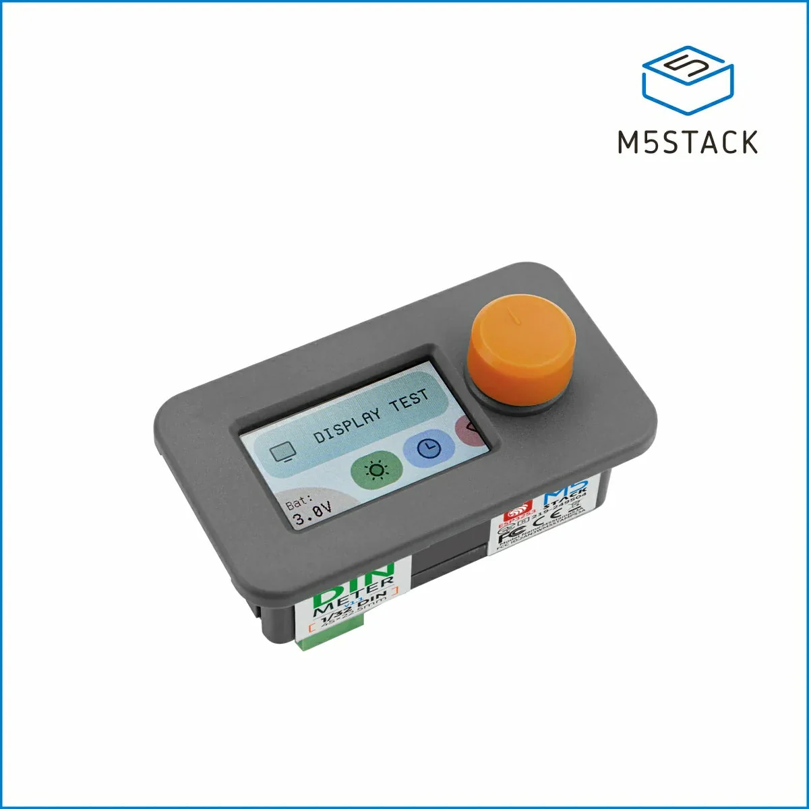

DinMeter v1.1
M5Stack · M5Stack DinMeter v1.1
DinMeter v1.1 is an 135x240 ESP32 display board by M5Stack based on the ESP32-S3 with 8MB flash.
Features, ports & interfaces
- 8 MB flash
- Wi-Fi 4 (802.11 b/g/n, 2.4 GHz) – version from the ESP32-S3 datasheet
- Lithium battery support
Specifications
| Parameter | Value | Source |
|---|---|---|
| Resolution | 135x240 | source |
| Shape | Rectangular | |
| Display driver | ST7789P3 | source |
| MCU / SoC | ESP32-S3FN8 @ Xtensa® 32-bit LX7 dual-core processor, clock frequency 240MHz | source |
| MCU family | ESP32-S3 | source |
| Flash | 8MB | source |
| Wi-Fi | 2.4 GHz Wi-Fi | source |
| USB | USB OTG, USB Serial/JTAG | source |
| SKU | K134-V11 | source |
| Category | M5Stack (all-in-one controllers) | |
| Dimensions | 53.0 x 30.0 x 32.0mm | source |
| Display | ST7789P3 | source |
| Power consumption | USB / DC Power / Battery | source |
| Vendor | M5Stack | |
| Weight | 17.8g | source |
Official links & documentation
Notes
- Auto-added by the monthly scraper on 2026-11-24 from the official product page; values are copied verbatim from that page, fields it does not state are empty. Not yet hand-reviewed.